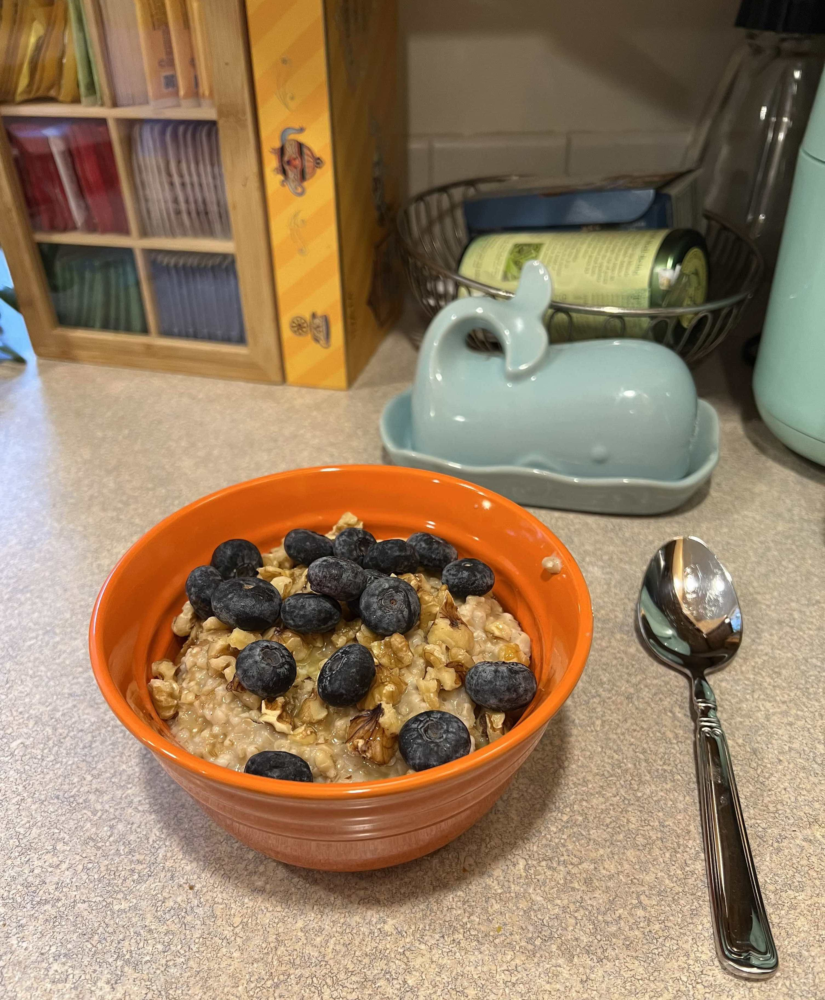

Steel-cut Oatmeal

Description
Using steel-cut oats produces a hardy and rustic breakfast experience.
Toss-in a few classic nuts and spices, a dollop of butter, a splash of milk,
sprinkle with brown sugar or a drizzle of maple syrup and you'll never
go back to instant breakfast. Serves 2-3.
Ingredients
- 3 cups water
- 2 cups steel-cut oats
- 1/4 tsp salt
- 1/8 tsp ginger powder
- 1/4 tsp cardamom powder (or substitute nutmeg)
- 1/4-1/2 cup chopped walnuts, almonds, or pistachios
- 1 tbsp butter
- 1 tbsp brown sugar
- 2 tbsp-1/4 cup milk as needed
Preparation
- Add water to a small pot
- Add salt and bring to boil
- Add oats while stirring
- Reduce heat to low and simmer 20-25 minutes, stirring occasionally
- Add a splash of milk as needed to not over-thicken
- Add ginger and cardamom, and stir well
- Remove from heat and let rest for 5 minutes
- Divide evenly between 2-3 bowls
- Top artistically with nuts, butter, brown sugar or maple syrup
- Add another splash of milk to taste
Enjoy with a side of fresh fruit, tea or coffee!